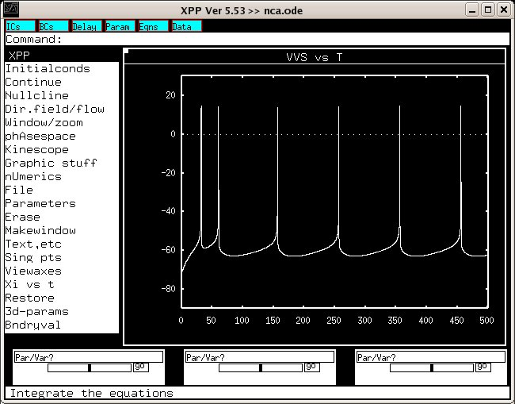
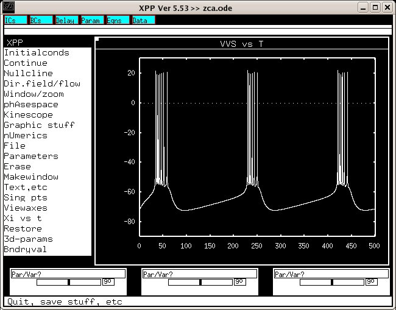

Readme file for a Model of a CA1 pyramidal neuron, according to the paper:
D. Golomb, C. Yue and Y. Yaari (2006)
Contribution of persistent Na^+ current and M-type K^+ current to somatic
bursting in CA1 pyramidal cells: combined experimental and modeling study.
J. Neurophysiol. published 28 June 2006, doi:10.1152/jn.00205.2006 .
The files are:
zca.ode : XPP file for Fig. 6Da (zero [Ca^2+]_0).
nca.ode : XPP file for Fig. 8Aa (normal [Ca^2+]_0).
casup.pdf: figure that shows activation curves, inactivation curves and
time constants as functions of V.
If you have problems, E-mail me to golomb@bgu.ac.il
David Golomb
Usage instructions:
xppaut nca.ode or similar startup graphically and then clicking on
Initialconds and then Go should
reproduce figure 8Aa:

The other file, zca.ode, figure 6Da:
